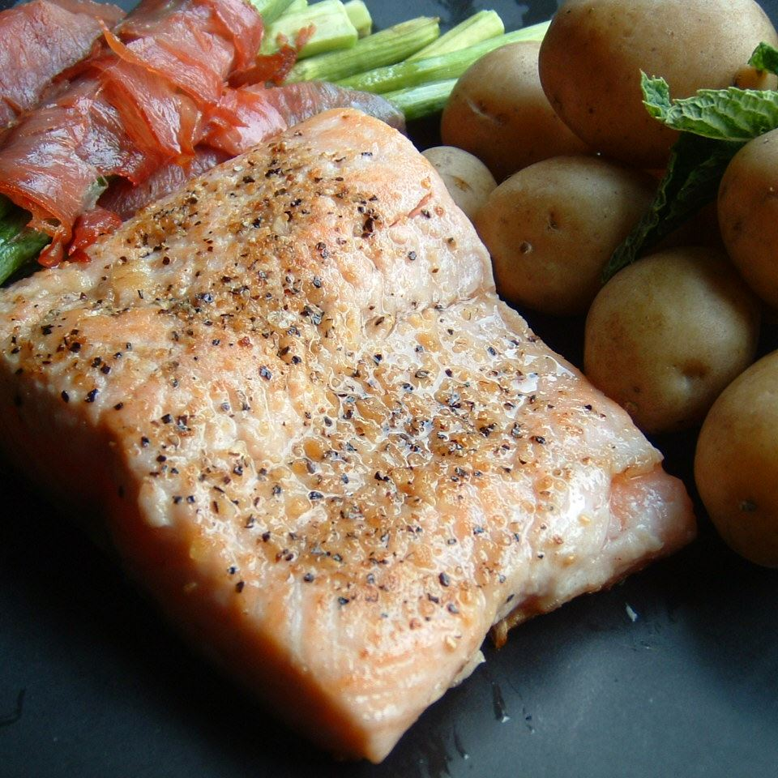

Lemon Garlic Salmon

Description
Fresh salmon needs very little preparation. These salmon fillets are cooked in good, sweet butter and minced
garlic, and then sprinkled with a little lemon juice.
If you'd like a little more kick and a fancy presentation,
caramelize onions and serve them atop the cooked salmon.
Ingredients
- 2 tablespoons unsalted butter
- 2 teaspoons minced garlic
- 1 teaspoon lemon pepper
- 2 (4 ounce) fillets salmon
- 1 lemon
Steps
- Season salmon fillets on both sides with lemon pepper.
-
In a large skillet, melt butter over medium high heat. Stir in garlic. Place salmon in pan. Cook for 10
minutes per inch of thickness, or until fish flakes when tested with a fork.
Flip fillets halfway through
cooking to brown on both sides. Sprinkle with lemon juice before serving.